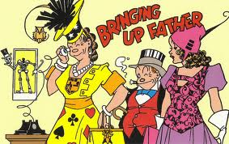

Bringing Up Father
What to do with the rejected Father?
The white woman's burden?
Why is Jiggs so slow to appreciate the importance of Emily Post?
Is Jiggs first generation?
Does the American immigrant have to reject his father?
THE COMIC STRIP by George McManus is in some ways less adequate to represent the
transition between Life With Father and "Blondie" than, say, My Life and Hard
Times by James Thurber. In that book "Father" and "Mother" have simply
switched the roles they played in the world of Clarence Day.
Thurber's "Mother" is a flint-eyed, iron-willed, Republican matriarch. His
"Father" is an unclassifiable fish. And the children of both Day and Thurber
situations have retired to a philosophic knoll to do a little uneasy kibitzing. They
constitute a sort of dramatic chorus, making Fanny Hurst noises about the fate which has
settled on both their houses. Humor has never appeared more starkly as a device for
evading painful realities than in these "funny" books. In fact, these books tell
us a great deal that their authors never intended they should.
The situation on which George McManus fixed his eye was partly that of Day-Thurber and
partly that of first-generation immigrants who quickly made good and were therefore forced
to "understand," or at least to imitate, the domestic patterns of the successful
middle class. As working man and woman, Maggie and Jiggs had a rapport in which their
different roles were fairly well defined for them. But as would-be conspicuous consumers
they have no present dignity or meaning for themselves at all. The meaning is all in the
future. Assuming that a radically different future is the meaning of their lives, they use
the present either to forget the past or to invent for themselves an imaginary past which
will be worthy of the future they cannot yet grasp.
Another way of looking at the same situation presented in "Bringing Up
Father" is provided by Margaret Mead in And Keep Your Powder Dry. According to her
anthropological categories, we can say that the father of Clarence Day represented the
vestiges of a nondynamic, patriarchal social order. The elder Day could think of the
Founding Fathers of America as his own ancestors. So he does not think of going them one
better. But he wishes to maintain his position. Not so Jiggs. Jiggs is first generation.
He has gone his dad one better. He has made good in a land of opportunity. For Maggie,
however, the past and the present are a discord, but she can dream of her grandchildren,
at least, as inheriting harmoniously the American past of Washington and Jefferson from
which she is excluded. To this end Jiggs is useless to her and to her daughter, partly
because his first-generation success entitles him to flaunt the crudity and vulgarity
which her daughter must shun. Jiggs has served his purpose. He is a has-been, isolated in
his own family. He is an autumn sunset seen against the brewery and the gas works.
So Maggie becomes the aspirant to culture and refinement, urging competitive consumer
habits on her daughter. Jiggs is portrayed stubby, crass, almost featureless, dethroned.
Maggie is raucous and angular, living the thrills of conspicuous waste, socially
aggressive but meeting only snubs and mortification. The appalling exuberance of her
cheesecake is a masterpiece of "masculine protest," which hits off the
suffragette era to which she belongs. But while a Jiggs had an intense motive toward
success in that, having rejected his father and his past, he was obliged to succeed, the
next generation will not feel the same pressure. It will want to "settle in" and
enjoy the sense of belonging in America. In Thurber's My Lie and Hard Times the father is
just such a second-generation type. Spineless, bewildered, overawed by an aggressive wife
who knows that the future belongs to her children, he is a figure of decline in a small
prosperous town. He is the sort who bristles with "Americanism" and hostility to
"foreigners" and "foreign entanglements." The sort who is ashamed of
the un-American speech and habits of his parents.
But the third generation, which has taken over America since 1940, can forget this
self-conscious Americanism and really get into the success groove which makes all the dads
obsolete every twenty years or so.
Marshall McLuhan, The Mechanical Bride, p.67